Welcome!
Welcome to this interactive tutorial on Inference for Linear Regression in R! In this lesson, you’ll build on your foundational understanding of linear regression by exploring how to make statistical inferences about regression coefficients in both simple and multiple regression contexts.
Learning Objectives
By the end of this tutorial, you will be able to:
- Interpret regression coefficients for models with
transformed variables, including:
- Linear models with log-transformed predictors
- Linear models with log-transformed responses
- Log-log models and their special percentage interpretation
- Understand multicollinearity and its effects on
regression models, including:
- How correlated predictors affect coefficient estimates
- Why coefficient signs can change when adding variables to a model
- How to identify when multicollinearity is problematic
- Conduct inference in multiple regression,
specifically:
- Interpret p-values for coefficients in the presence of other predictors
- Understand the conditional nature of hypothesis tests in multiple regression
- Determine which variables are significant predictors given others in the model
- Apply these concepts using real datasets including LA home prices and NYC restaurant ratings
Inference on transformed variables
Note that when performing inferential analysis on transformed variables, an important aspect to keep in mind is the interpretation of the slope coefficients used in the transformed models.
Interpreting coefficients - linear
\(Y = \beta\_0 + \beta\_1 \cdot X + \epsilon\), where \(\epsilon \sim N(0, \sigma\_\epsilon)\)
\(E[Y\_X] = \beta\_0 + \beta\_1 \cdot X\)
\(E[Y\_{X+1}] = \beta\_0 + \beta\_1 \cdot (X+1)\)
\(\beta\_1 = E[Y\_{X+1}] - E[Y\_X]\)
Recall that in a simple linear model setting, the true population slope describes the change in expected response when X is one unit larger. That is, for every additional unit of X, we expect that the response variable, Y, is beta-1 units larger, on average.
Interpreting coefficients - nonlinear X
\(Y = \beta\_0 + \beta\_1 \cdot \ln(X) + \epsilon\), where \(\epsilon \sim N(0, \sigma\_\epsilon)\)
\(E[Y\_{\ln(X)}] = \beta\_0 + \beta\_1 \cdot \ln(X)\)
\(E[Y\_{\ln(X)+1}] = \beta\_0 + \beta\_1 \cdot (\ln(X)+1)\)
\(\beta\_1 = E[Y\_{\ln(X)+1}] - E[Y\_{\ln(X)}]\)
When X is non-linear, the slope coefficient gives the additional expected increase in non-linear units. Here, when the log of X goes up by one unit, the expected value of Y is beta-1 units larger. This interpretation would work for any function of X. That is, the slope represents the change average expected Y units for a one unit change in whatever function of X you are working with.
Interpreting coefficients - nonlinear Y
\(\ln(Y) = \beta\_0 + \beta\_1 \cdot X + \epsilon\), where \(\epsilon \sim N(0, \sigma\_\epsilon)\)
\(E[\ln(Y)\_X] = \beta\_0 + \beta\_1 \cdot X\)
\(E[\ln(Y)\_{X+1}] = \beta\_0 + \beta\_1 \cdot (X+1)\)
\(\beta\_1 = E[\ln(Y)\_{X+1}] - E[\ln(Y)\_X]\)
Similarly, when Y is non linear, you can interpret the slope coefficient by saying that a one unit increase in X provides an expected increase of beta-1 in log-Y units. The interpretation will again work for any functional transformation of Y in that the slope coefficient represents an average expected change in the new units given a one unit change in X.
Interpreting coefficients - both nonlinear
\(\ln(Y) = \beta\_0 + \beta\_1 \cdot \ln(X) + \epsilon\), where \(\epsilon \sim N(0, \sigma\_\epsilon)\)
\(E[\ln(Y)\_{\ln(X)}] = \beta\_0 + \beta\_1 \cdot \ln(X)\)
\(E[\ln(Y)\_{\ln(X)+1}] = \beta\_0 + \beta\_1 \cdot (\ln(X)+1)\)
\(\beta\_1 = E[\ln(Y)\_{\ln(X)+1}] - E[\ln(Y)\_{\ln{X}}]\)
When the variables have been transformed so that both are on a non-linear scale, you can again model your interpretation based on the units at hand:
a one-unit increase in log-X is associated with an expected increase of beta-1 in log-Y.
And again, the interpretation in transformed units will hold for any functional transformation of X and Y.
Interpreting coefficients - both natural log (special case)
\(\ln(Y) = \beta\_0 + \beta\_1 \cdot \ln(X) + \epsilon\), where \(\epsilon \sim N(0, \sigma\_\epsilon)\)
\(E[\ln(Y)\_{\ln(X)}] = \beta\_0 + \beta\_1 \cdot \ln(X)\)
\(E[\ln(Y)\_{\ln(X)+1}] = \beta\_0 + \beta\_1 \cdot (\ln(X)+1)\)
\(\beta\_1 = E[\ln(Y)\_{\ln(X)+1}] - E[\ln(Y)\_{\ln{X}}]\)
OR (when X and Y are both transformed using natural log):
\(\beta_1 =\) percent change in Y for each 1% change in X
However, when both variables are transformed using natural log (as they are here), there is a special interpretation that usually holds. The derivation of the interpretation is beyond the scope of this class, but often in a natural log-log situation, the beta coefficient can be interpreted as the percent change in Y for each 1-percent change in X.
Note that with the housing data, it is most appropriate to run a model with log transformed variables (so that the technical conditions hold). So now it’s your turn to interpret the new transformed model.
Transformed model
As you saw in the previous lesson, transforming the variables can often transform a model from one where the technical conditions are violated to one where the technical conditions hold. When technical conditions hold, you are able to accurately interpret the inferential output. In the two models below, note how the standard errors and p-values change (although in both settings the p-value is significant).
- Run a linear regression on
priceversusbedfor theLAhomesdataset, then tidy the output. - Do the same on log-transformed variables:
log(price)versuslog(bed).
LAhomes <- LAhomes |>
filter(bed > 0)
ggplot(LAhomes, aes(bed, price)) +
geom_point()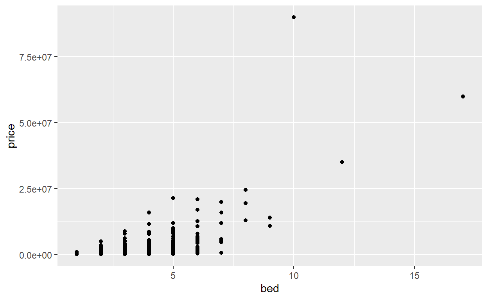
# Create a tidy model
# Create a tidy model using the log of both variables- Each time call `lm()` with a formula and the dataset, then pass the model to `tidy()`.
- To model the log of price, use `log(price)` in your formula.# Create a tidy model
lm(price ~ bed, data = LAhomes) |> tidy()
# Create a tidy model using the log of both variables
lm(log(price) ~ log(bed), data = LAhomes) |> tidy()Interpreting transformed coefficients
Transforming variables is a powerful tool to use when running linear regressions. However the parameter estimates must be carefully interpreted in a model with transformed variables.
You will need to run the linear model before answering the question:
lm(log(price) ~ log(sqft), data = LAhomes) |> tidy()
Consider data collected by Andrew Bray at Reed College on
characteristics of LA Homes in 2010. The model is given below, and your
task is to provide the appropriate interpretation of the coefficient on
log(sqft).
Note: you must be careful to avoid causative interpretations. Additional square footage does not necessarily cause the price of a specific house to go up. The interpretation of the coefficient describes the estimate of the average price of homes at a given square footage.
Multicollinearity
What is Multicollinearity?
Multicollinearity occurs when predictor variables in a regression model are correlated with each other. This can cause several problems:
- Coefficient estimates become unstable
- Standard errors increase
- Coefficients may change sign when variables are added/removed
- P-values become unreliable
Let’s explore this with a concrete example using a “change jar” dataset.
Regressing dollar amount on coins
head(change)Consider the following dataset. Each row represents change in an individual’s pocked. The information includes the breakdown of which coins as well as the total monetary amount of the coins. The coins column gives the total number of coins in the pocket, and the small column gives the total number of pennies, nickels and dimes. We’ve shown the first 6 rows of the dataset, corresponding to the amount of change in six different individual’s pockets. Although not a random sample, these data were collected by Jeff Witmer at Oberlin College.
Amount vs. coins - plot
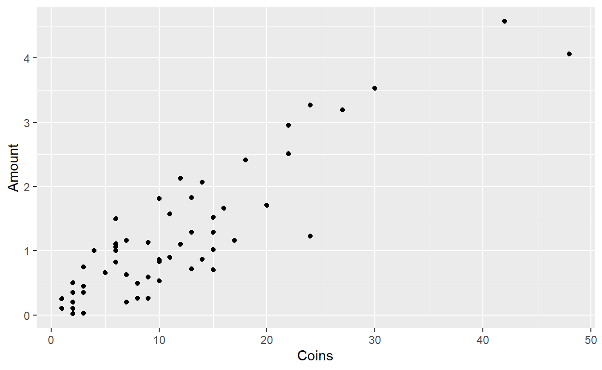
The scatterplot on total amount of money versus total number of coins indicates that the amount of money seems to be linearly related to the number of coins.
Amount vs. coins - linear model
lm(Amount ~ Coins, data = change) |> tidy()
# term estimate std.error statistic p.value
# 1 (Intercept) 0.1449 0.0902 1.61 1.13e-01
# 2 Coins 0.0945 0.0063 14.99 6.01e-22Indeed, the slope coefficient is quite statistically significant with a p-value of 6 times 10 to the negative 22.
Amount vs. small coins - plot
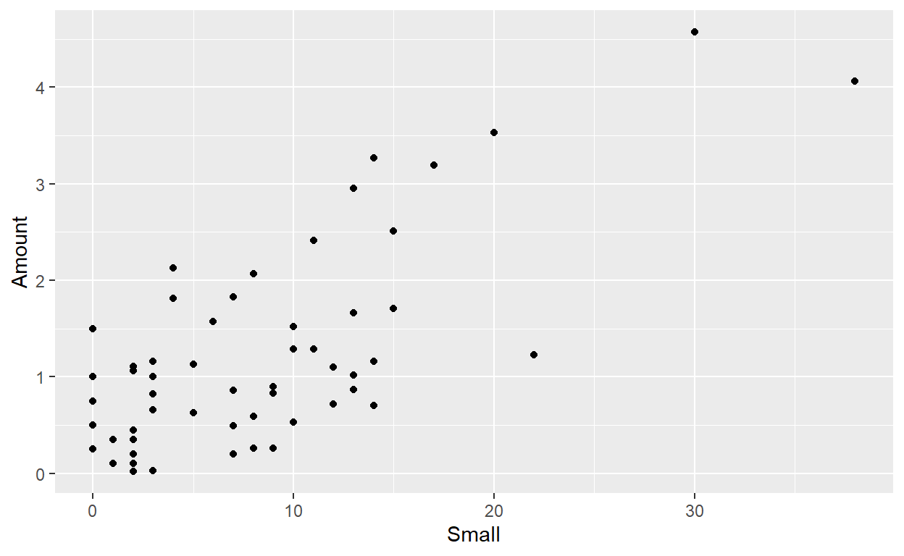
Additionally, the amount of money also seems to be linearly related to the number of small coins (here the x-axis represents the number of pennies, nickels and dimes in each individual’s pocket).
Amount vs. small coins - linear model
lm(Amount ~ Small, data = change) |> tidy()
# term estimate std.error statistic p.value
# 1 (Intercept) 0.4225 0.1244 3.40 1.22e-03
# 2 Small 0.0989 0.0118 8.38 1.10e-11The liner model on the number of small coins reinforces the previous plot with a positive and statistically significant slope coefficient.
Amount vs. coins and small coins
\(\hat{\text{Amount}} = -0.00554 + 0.25862 \cdot \text{Coins} - 0.21611 \cdot \text{Small Coins}\)
lm(Amount ~ Coins + Small, data = change) |> tidy()
# term estimate std.error statistic p.value
# 1 (Intercept) -0.00554 0.02735 -0.202 8.40e-01
# 2 Coins 0.25862 0.00682 37.917 3.95e-43
# 3 Small -0.21611 0.00864 -25.021 4.17e-33However, when both the number of coins and the number of small coins are entered into the model, the coefficient associated with the number of small coins becomes NEGATIVE! that is because with multiple variables in the model, each coefficient is interpreted while holding all of the other variables constant.
Let’s say we know that an individual has 10 coins in her pocket. The predicted amount of money is much lower if we know that 9 of the coins are small as compared to knowing that only 1 of them is small. That is, the more small coins she has out of 10, the LOWER we will predict her amount to be.
The number of coins and number of small coins are highly correlated, which is why the model presents a surprising sign on the small coin coefficient. When variables are correlated, interpreting the coefficients can sometimes be difficult, and we call this a problem of multicollinearity.
LA Homes, multicollinearity (1)
Let’s practice interpreting models when the variables are correlated.
In the next series of exercises, you will investigate how to interpret the sign (positive or negative) of the slope coefficient as well as the significance of the variables (p-value). You will continue to use the log transformed variables so that the technical conditions hold, but you will not be concerned here with the value of the coefficient.
- Run a linear regression on log
priceversus logsqftfor theLAhomesdataset, then tidy the output. - Look at the output. Is the relationship is positive or negative? Is relationship is significant?
ggplot(LAhomes, aes(sqft, price)) +
geom_point() +
scale_x_log10() +
scale_y_log10()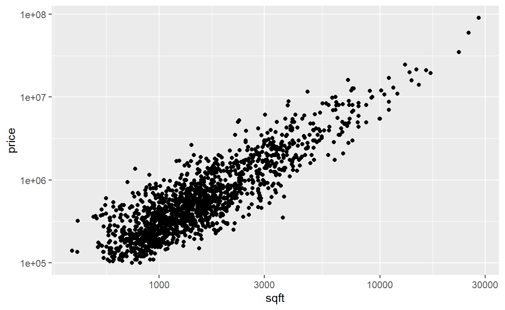
# Output the tidy modelCall `lm()` with a formula and the dataset, then pass the model to `tidy()`.# Output the tidy model
lm(log(price) ~ log(sqft), data = LAhomes) |> tidy()LA Homes, multicollinearity (2)
Repeat the previous exercise, but this time regress the log
transformed variable price on the new variable
bath which records the number of bathrooms in a home.
- Run a linear regression on log
priceversus logbathfor theLAhomesdataset, then tidy the output. - Look at the output. Is the relationship is positive or negative? Is relationship is significant?
ggplot(LAhomes, aes(bath, price)) +
geom_point() +
scale_x_log10() +
scale_y_log10()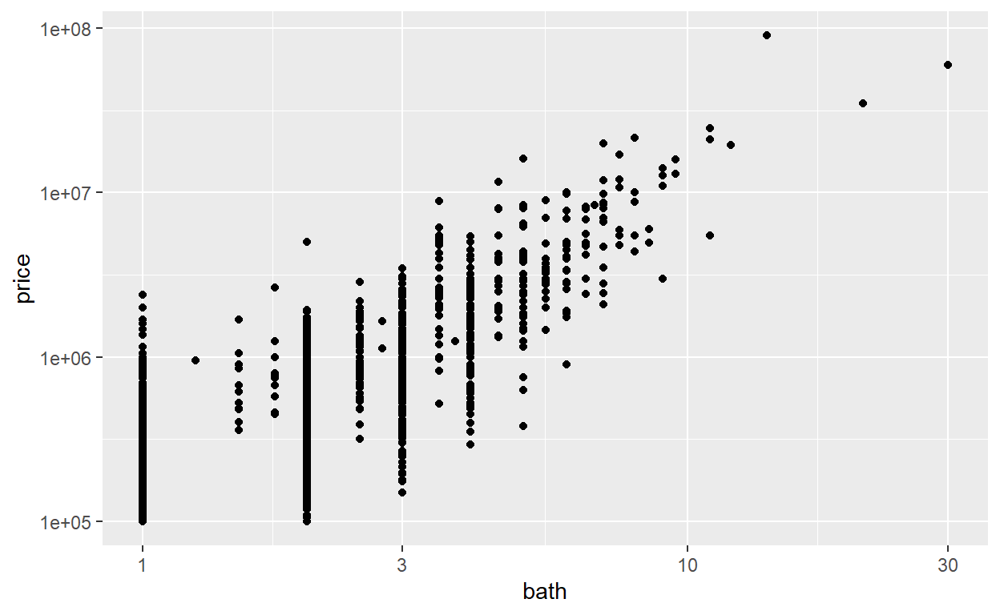
# Output the tidy modelCall `lm()` with a formula and the dataset, then pass the model to `tidy()`.# Output the tidy model
lm(log(price) ~ log(bath), data = LAhomes) |> tidy()LA Homes, multicollinearity (3)
Now, regress the log transformed variable price on the
log transformed variables sqft AND bath. The
model is a three dimensional linear regression model where you are
predicting price as a plane (think of a piece of paper)
above the axes including both sqft and
bath.
- Run a
tidylmon the log transformed variablespriceand both ofsqftandbathfrom the datasetLAhomes. Use the formula:log(price) ~ log(sqft) + log(bath). - Now look at the coefficients separately. What happened to the signs of each of the coefficients? What happened to the significance of each of the coefficients?
ggpairs(LAhomes, columns = c("price", "sqft", "bath"))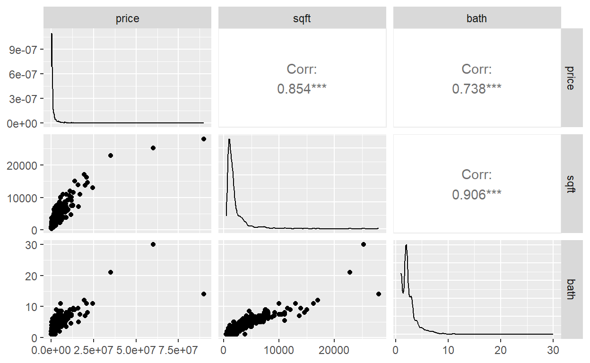
What to look for in this plot: - The diagonal shows distributions of individual variables - The upper triangle shows correlation coefficients (values close to 1 or -1 indicate strong correlation) - The lower triangle shows scatter plots of variable relationships - Strong correlations between predictors (not involving the response) signal potential multicollinearity
# Output the tidy model- Call `lm()` with a formula and the dataset, then pass the model to `tidy()`.
- In the formula, separate each of the explanatory variables with a plus.# Output the tidy model
lm(log(price) ~ log(sqft) + log(bath), data = LAhomes) |> tidy()Multiple linear regression
You have seen multiple linear regression in previous tutorials. And throughout this course, we have discussed inference in the simple linear model. Next we bring together those ideas by walking through the interpretation of the inference analysis on the multiple regression model.
Bathrooms negative coefficient
lm(log(price) ~ log(bath), data=LAhomes) |> tidy()# term estimate std.error statistic p.value
# 1 (Intercept) 12.23 0.0280 437.2 0.00e+00
# 2 log(bath) 1.43 0.0306 46.6 9.66e-300
lm(log(price) ~ log(sqft) + log(bath), data=LAhomes) |> tidy()# term estimate std.error statistic p.value
# 1 (Intercept) 2.514 0.2619 9.601 2.96e-21
# 2 log(sqft) 1.471 0.0395 37.221 1.19e-218
# 3 log(bath) -0.039 0.0453 -0.862 3.89e-01Recall from the previous exercise that - somewhat unexpectedly - the coefficient associated with number of bathrooms went from having a positive relationship with home price in the single variable model to having a negative relationship with home price when the size of the home was also included in the model.
The reason for the switch in sign for the coefficients is similar to the example we saw with the coins. Here, for a house that has a given square feet, more bathrooms means that less of the square footage is used for bedrooms and other usable space (thus reflecting a lower average home price).
Bathrooms non-significant coefficient
lm(log(price) ~ log(bath), data=LAhomes) |> tidy()# term estimate std.error statistic p.value
# 1 (Intercept) 12.23 0.0280 437.2 0.00e+00
# 2 log(bath) 1.43 0.0306 46.6 9.66e-300
lm(log(price) ~ log(sqft) + log(bath), data=LAhomes) |> tidy()# term estimate std.error statistic p.value
# 1 (Intercept) 2.514 0.2619 9.601 2.96e-21
# 2 log(sqft) 1.471 0.0395 37.221 1.19e-218
# 3 log(bath) -0.039 0.0453 -0.862 3.89e-01Notice also that the coefficient on bathrooms is not significant (and it was significant in the model containing only bathrooms).
The significance changes because the hypothesis changes. In the first model on bathrooms only, the p-value describes the probability of the data if there is no relationship between bathrooms and price.
In the second model, the p-value on bathrooms describes the probability of the data if there is no relationship between bathrooms and price GIVEN THAT SQFT IS IN THE MODEL.
We interpret the last p-value in the second model as information that the bathrooms variable is not needed if square feet is used in the linear model.
Price on bed and bath
lm(log(price) ~ log(bath) + bed, data=LAhomes) |> tidy()# term estimate std.error statistic p.value
# 1 (Intercept) 11.965 0.0384 311.67 0.00e+00
# 2 log(bath) 1.076 0.0465 23.14 2.38e-102
# 3 bed 0.189 0.0193 9.82 4.01e-22Notice, that when we regress the log price of the homes on bath and bed (without square feet), both variables are significant. That is, GIVEN BATH IS IN THE MODEL, THE NUMBER OF BEDROOMS IS A SIGNIFICANT PREDICTOR OF PRICE.
Similarly, GIVEN THE NUMBER OF BEDROOMS IS IN THE MODEL, THE NUMBER OF BATHROOMS IS A SIGNIFICANT PREDICTOR OF PRICE.
Large model on price
lm(log(price) ~ log(sqft) + log(bath) + bed, data=LAhomes) |> tidy()# term estimate std.error statistic p.value
# 1 (Intercept) 1.5364 0.2894 5.310 1.25e-07
# 2 log(sqft) 1.6456 0.0454 36.215 6.27e-210
# 3 log(bath) 0.0165 0.0452 0.365 7.15e-01
# 4 bed -0.1236 0.0167 -7.411 2.03e-13As we saw before, now each p-value is interpreted given ALL THE REMAINING VARIABLES. As we expect, bathrooms is not significant given square feet and bedrooms are in the model.
However, both other variables are significant predictors of log-price. That is, the number of bedrooms is a significant predictor of price, even when square feet and bathrooms are in the model.
Square feet is a significant predictor of log price even when the number of bathrooms and bedrooms are in the model.
We’ve only used the mathematical model to address significance in the multiple linear regression setting. That’s because the permutation test is much harder to implement when working with multiple variables, and it is beyond the scope of this class. And now it’s your turn to try some examples.
Inference on coefficients
Using the NYC Italian restaurants dataset (compiled by Simon Sheather
in A Modern Approach to Regression with R),
restNYC, you will investigate the effect on the
significance of the coefficients when there are multiple variables in
the model. Recall, the p-value associated with any coefficient is the
probability of the observed data given that the particular variable is
independent of the response AND given that all other variables
are included in the model.
The following information relates to the dataset restNYC
which is loaded into your workspace: - each row represents one customer
survey from Italian restaurants in NYC - Price = price (in US$) of
dinner (including tip and one drink) - Service = rating of the service
(from 1 to 30) - Food = rating of the food (from 1 to 30) - Decor =
rating of the decor (from 1 to 30)
- Run a
tidylmregressingPriceonService. - Run a
tidylmregressingPriceonService,Food, andDecor. - What happened to the significance of
Servicewhen additional variables were added to the model?
ggpairs(restNYC, columns = c("Price", "Service", "Food", "Decor"))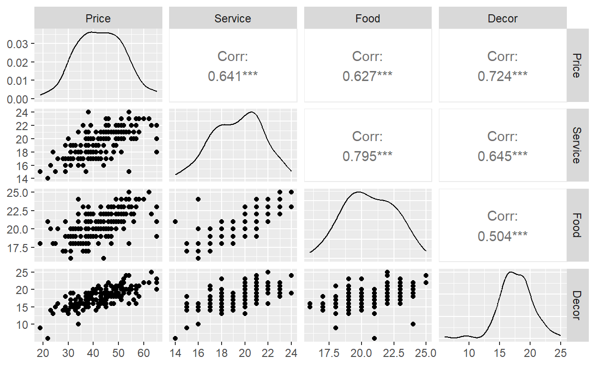
# Output the first model
# Output the second model- Each time call `lm()` with a formula and the dataset, then pass the model to `tidy()`.
- In the formula, separate each of the explanatory variables with a plus.# Output the first model
lm(Price ~ Service, data = restNYC) |> tidy()
# Output the second model
lm(Price ~ Service + Food + Decor, data = restNYC) |> tidy()Interpreting coefficients
You will need to run the linear model before answering the question:
lm(Price ~ Service + Food + Decor, data=restNYC) |> tidy()
lm(Price ~ Service + Food + Decor, data=restNYC) |> tidy()Model Diagnostics with the Performance Package
Why Diagnostics Matter
Once you’ve built a regression model, your work isn’t done! Before trusting your model’s results and making inferences, you need to check whether the model assumptions are met and whether any observations are unduly influencing your results.
Think of model diagnostics like a health checkup for your regression model. Just as a doctor runs multiple tests to assess different aspects of your health, we need to examine multiple diagnostic plots to assess different aspects of our model’s validity.
Learning Objectives for this section:
By the end of this section, you will be able to:
- Use the
check_model()function to create comprehensive diagnostic plots - Interpret posterior predictive checks to assess overall model fit
- Evaluate linearity assumptions using residual patterns
- Assess homogeneity of variance (homoscedasticity)
- Check normality of residuals using Q-Q plots
- Identify influential observations using leverage and Cook’s distance
- Detect multicollinearity using Variance Inflation Factors (VIF)
The Performance Package
The performance package provides a unified interface for
model diagnostics. Instead of creating multiple individual diagnostic
plots, we can use check_model() to see everything at
once!
First, let’s load the package and fit a model:
library(performance)
library(see) # For better visualizations with performance
library(tidyverse)
# We'll use the mariokart dataset
# Let's fit a multiple regression model
model_mk <- lm(total_pr ~ duration + start_pr + cond + wheels,
data = mariokart)Now, let’s run the comprehensive diagnostic check:
check_model(model_mk)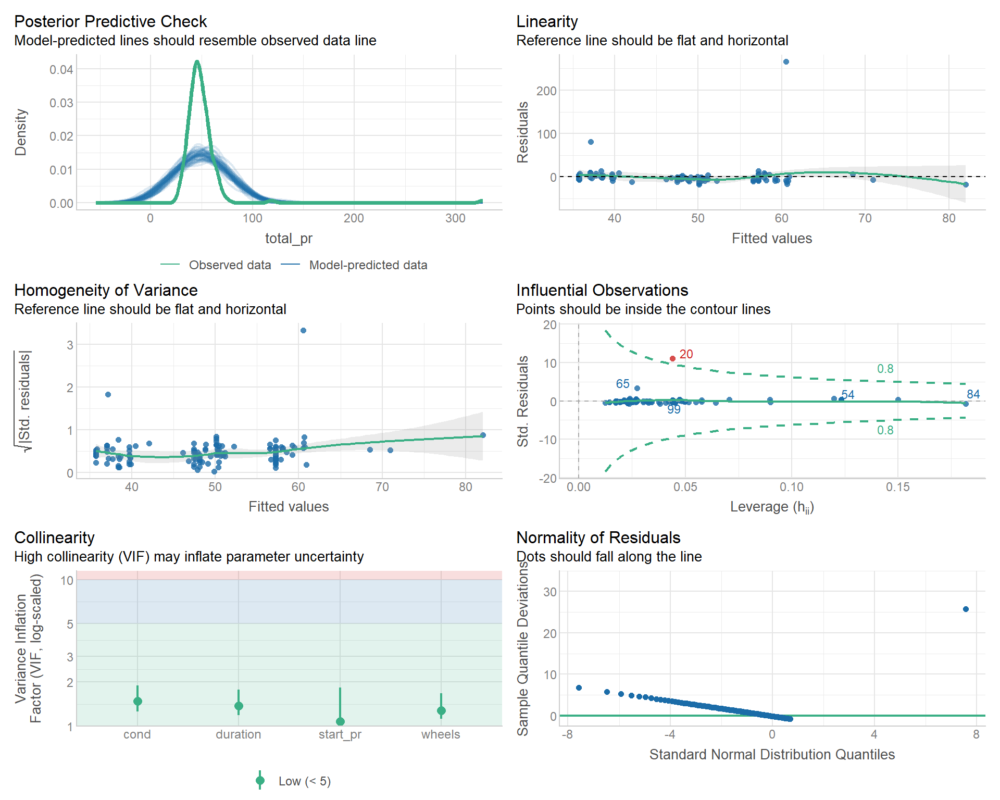
This single command produces six diagnostic plots! Let’s understand each one.
Understanding Each Diagnostic Plot
1. Posterior Predictive Check
What it shows: This plot compares the distribution of your actual data (in blue) to simulated data from your model (in lighter lines).
What to look for:
- The blue line (observed data) should fall within the range of the simulated lines
- If the distributions overlap well, your model captures the data generating process
- Serious mismatches suggest your model is missing important features
Interpretation:
# Good: Model-predicted data resembles observed data
# Bad: Blue line is way outside the simulated lines
# This suggests the model structure is reasonableRed flags:
- ⚠️ Observed data has a different shape than predicted
- ⚠️ Observed data has different spread (variance) than
predicted
- ⚠️ Observed data has outliers the model can’t capture
Example interpretation: “The posterior predictive check shows good agreement between observed and model-predicted distributions, suggesting our model structure is appropriate.”
2. Linearity Check
What it shows: A plot of residuals vs. fitted values with a smoothed line
What to look for: - The reference line should be flat and horizontal at zero - The smoothed line should stay close to the reference line - No clear patterns or curves in the residuals
Interpretation:
# Good: Flat line at zero (residuals randomly scattered)
# Bad: U-shaped or curved pattern
# Bad: Systematic trend (line slopes up or down)Red flags:
- ⚠️ Curved pattern: Relationship might not be linear (consider transformations)
- ⚠️ Funnel shape: Variance changes with fitted values (see heteroscedasticity)
- ⚠️ Clusters of points: Might indicate missing categorical variable
Example interpretation: “The linearity plot shows residuals randomly scattered around zero with no clear pattern, indicating that linear relationships are appropriate for this model.”
What to do if violated:
- Try transforming the response variable (log, sqrt)
- Try transforming predictor variables
- Consider polynomial terms (e.g.,
x + I(x^2)) - Consider interaction terms
3. Homogeneity of Variance (Homoscedasticity)
What it shows: Square root of standardized residuals vs. fitted values
What to look for:
- The reference line should be flat and horizontal
- Points should be evenly spread at all levels of fitted values
- No “funnel” or “megaphone” patterns
Interpretation:
# Good: Points evenly spread across the range
# Bad: Variance increases/decreases with fitted values
# Bad: Clear funnel shape (wider on right or left)Red flags:
- ⚠️ Funnel shape (variance increases): Consider log transformation of Y
- ⚠️ Reverse funnel (variance decreases): Might need different transformation
- ⚠️ Multiple bands: Might indicate missing grouping variable
Example interpretation: “The scale-location plot shows some evidence of heteroscedasticity, with slightly increasing variance at higher fitted values. This suggests we might benefit from a log transformation of the response variable.”
What to do if violated:
- Transform the response variable (log transformation often helps)
- Use weighted least squares regression
- Use robust standard errors
- Transform predictor variables that are skewed
4. Influential Observations (Cook’s Distance)
What it shows: Standardized residuals vs. leverage, with Cook’s distance contours
What to look for:
- Most points should be inside the dashed Cook’s distance contour lines
- Points outside the 0.5 or 1.0 contours are influential
- Points in the upper right or lower right corners have high leverage AND large residuals
Key concepts:
- Leverage: How extreme a point is in predictor space (unusual X values)
- Residual: How far the point is from the model
prediction (unusual Y value)
- Influential: High leverage + large residual = can change model coefficients
Interpretation:
# High leverage, low residual: Not necessarily problematic
# Low leverage, high residual: Outlier but not influential
# High leverage, high residual: VERY influential - investigate!Red flags:
- ⚠️ Points outside Cook’s distance = 0.5: Potentially influential
- ⚠️ Points outside Cook’s distance = 1.0: Highly influential - definitely investigate
- ⚠️ Points in corners: High leverage AND large residual (worst case!)
Example interpretation: “The influential observations plot identifies observation #47 as potentially influential, with Cook’s distance exceeding 0.5. This observation has high leverage and should be investigated further.”
What to do:
- Identify the observations: Use
check_outliers()(see next section) - Investigate: Look at the raw data - is it a data entry error?
- Decide:
- If data error: Remove and document
- If legitimate outlier: Report results with and without
- If representative of population: Keep it
- Never automatically remove outliers without investigation!
5. Collinearity (VIF)
What it shows: Variance Inflation Factors (VIF) for each predictor
What to look for:
- VIF values should be below 5 (some use threshold of 10)
- Lower values indicate less multicollinearity
- All points should be in the “Low Correlation” range
Key concepts:
- VIF = 1: No correlation with other predictors (ideal)
- VIF = 5: Variance of coefficient is 5× larger due to correlation
- VIF > 10: Serious multicollinearity problem
Interpretation:
# Good: All VIF < 5 (or at least < 10)
# Concerning: Any VIF between 5 and 10
# Bad: Any VIF > 10Red flags:
- ⚠️ VIF > 5: Moderate multicollinearity - consider removing variable
- ⚠️ VIF > 10: Severe multicollinearity - action needed
- ⚠️ Multiple high VIFs: Predictors are highly correlated
Example interpretation: “The VIF plot shows that ‘start_pr’ has a VIF of 7.3, indicating moderate multicollinearity. This suggests that starting price shares considerable information with other predictors in the model.”
What to do if violated:
- Check correlation matrix to identify which variables are correlated
- Remove one of the correlated variables
- Combine correlated variables (e.g., create an index)
- Use ridge regression or other regularization methods
- Center predictors if including interaction terms
6. Normality of Residuals
What it shows: Q-Q (quantile-quantile) plot comparing residuals to normal distribution
What to look for:
- Points should fall along the diagonal reference line
- Some deviation at the extremes is acceptable
- Systematic patterns indicate non-normality
Interpretation:
# Good: Points follow the line closely
# Bad: S-curve (skewed distribution)
# Bad: Points above or below line at extremes (heavy/light tails)Red flags: - ⚠️ S-curve pattern: Residuals are skewed (transformation might help) - ⚠️ Points curve away at high end: Right-skewed (try log transformation) - ⚠️ Points curve away at low end: Left-skewed (might need different transformation) - ⚠️ Multiple outliers: Points far from line on either end
Example interpretation: “The Q-Q plot shows residuals generally following the normal distribution, with slight deviation in the upper tail. This suggests approximate normality with a few larger residuals, which is acceptable for most purposes.”
What to do if violated:
- Transform the response variable (log, square root)
- Check for outliers and influential observations
- Use robust regression methods
- Remember: With large samples, slight violations are okay due to Central Limit Theorem
- With small samples, normality is more important
Interactive Practice: Interpreting Diagnostics
Let’s practice with our MarioKart model. Examine the diagnostic plots and answer these questions:
# Refit our model
model_mk <- lm(total_pr ~ duration + start_pr + cond + wheels,
data = mariokart)
# View diagnostics
check_model(model_mk)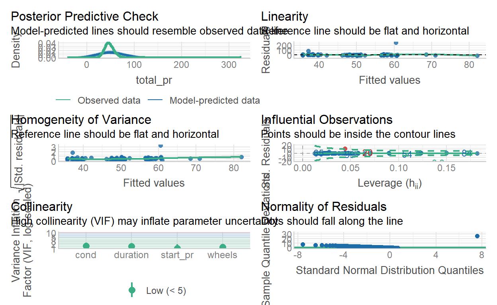
Detailed Outlier Detection
While check_model() shows us potential influential
points, we need more detailed tools to identify them. The
check_outliers() function provides this.
Using check_outliers()
# Detect outliers using multiple methods
outlier_results <- check_outliers(model_mk)
outlier_results## 1 outlier detected: case 20.
## - Based on the following method and threshold: cook (0.843).
## - For variable: (Whole model).This output shows:
- Which observations are identified as outliers
- Which method flagged them (Cook’s distance by default)
- The threshold used for detection
Visualizing Outliers
We can create a detailed visualization:
# Create a bar plot showing outlier metrics
plot(outlier_results, type = "bar")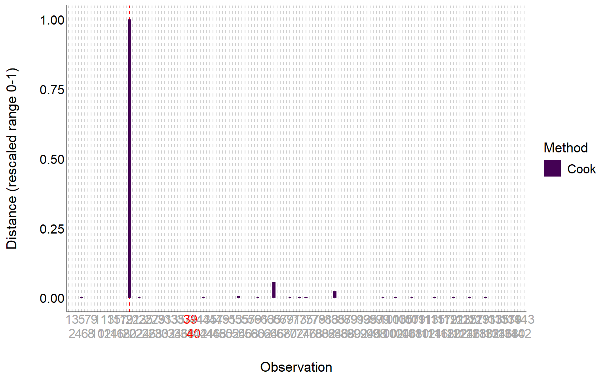
Interpretation:
- Bars show Cook’s distance for each observation
- Red horizontal line shows the threshold
- Observations above the line are flagged as outliers
Multiple Detection Methods
check_outliers() can use several methods
simultaneously:
# Use multiple detection methods
outlier_comprehensive <- check_outliers(model_mk,
method = c("cook", "pareto", "zscore"))
outlier_comprehensive## 1 outlier detected: case 20.
## - Based on the following methods and thresholds: cook (3.291), zscore
## (0.843).
## - For variable: (Whole model).
##
## Note: Outliers were classified as such by at least half of the selected methods.
##
## -----------------------------------------------------------------------------
##
## The following observations were considered outliers for two or more
## variables by at least one of the selected methods:
##
## Row n_Zscore n_Cook .data_merge_id_y
## 1 20 0 (Multivariate) 1Methods available:
- cook: Cook’s distance (influence)
- pareto: Pareto distribution of residuals
- zscore: Standardized residuals
- iqr: Interquartile range method
- mahalanobis: Mahalanobis distance
Practical Example: Complete Diagnostic Workflow
Let’s walk through a complete diagnostic workflow:
# Step 1: Fit the model
model1 <- lm(total_pr ~ duration + start_pr + cond + wheels + n_bids,
data = mariokart)
# Step 2: Get model summary
summary(model1)##
## Call:
## lm(formula = total_pr ~ duration + start_pr + cond + wheels +
## n_bids, data = mariokart)
##
## Residuals:
## Min 1Q Median 3Q Max
## -21.261 -7.529 -2.331 2.951 257.080
##
## Coefficients:
## Estimate Std. Error t value Pr(>|t|)
## (Intercept) 15.0040 9.4163 1.593 0.113372
## duration 0.6056 0.9137 0.663 0.508566
## start_pr 0.3229 0.1775 1.819 0.071093 .
## condused 1.2546 4.9941 0.251 0.802029
## wheels 10.6186 2.6892 3.949 0.000125 ***
## n_bids 1.2442 0.4468 2.785 0.006114 **
## ---
## Signif. codes: 0 '***' 0.001 '**' 0.01 '*' 0.05 '.' 0.1 ' ' 1
##
## Residual standard error: 23.97 on 137 degrees of freedom
## Multiple R-squared: 0.1602, Adjusted R-squared: 0.1296
## F-statistic: 5.229 on 5 and 137 DF, p-value: 0.0002002# Step 3: Run comprehensive diagnostics
check_model(model1)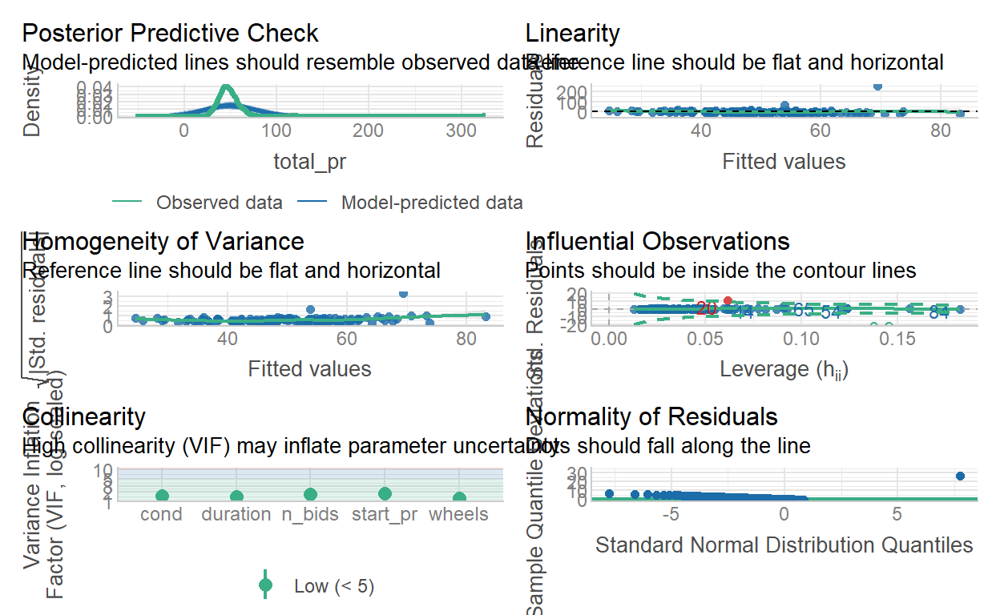
# Step 4: Check for outliers specifically
outliers1 <- check_outliers(model1)
print(outliers1)## 1 outlier detected: case 20.
## - Based on the following method and threshold: cook (0.9).
## - For variable: (Whole model).# Step 5: Check multicollinearity specifically
check_collinearity(model1)# Step 6: If outliers are found, investigate
if (any(outliers1)) {
cat("\nOutliers detected! Investigating...\n")
# Identify which observations are outliers
outlier_indices <- which(outliers1)
cat("Outlier observation numbers:", outlier_indices, "\n")
# Look at those specific observations
print(mariokart[outlier_indices, ])
}##
## Outliers detected! Investigating...
## Outlier observation numbers: 20
## # A tibble: 1 × 12
## id duration n_bids cond start_pr ship_pr total_pr ship_sp seller_rate
## <dbl> <int> <int> <fct> <dbl> <dbl> <dbl> <fct> <int>
## 1 1.10e11 7 22 used 1 25.5 327. parcel 115
## # ℹ 3 more variables: stock_photo <fct>, wheels <int>, title <fct>Making Decisions Based on Diagnostics
After running diagnostics, you might need to:
If linearity is violated:
# Try log transformation
model_log <- lm(log(total_pr) ~ duration + start_pr + cond + wheels,
data = mariokart)
check_model(model_log)If outliers are found:
# Create dataset without outliers
outlier_indices <- which(check_outliers(model1))
mariokart_clean <- mariokart[-outlier_indices, ]
# Refit model
model_clean <- lm(total_pr ~ duration + start_pr + cond + wheels,
data = mariokart_clean)
# Compare results
summary(model1) # Original
summary(model_clean) # Without outliersIf multicollinearity is severe:
# Check which variables are correlated
library(correlation)
correlation(mariokart %>% select(duration, start_pr, wheels, n_bids))
# Remove one of the highly correlated variables
model_reduced <- lm(total_pr ~ duration + cond + wheels,
data = mariokart)
check_collinearity(model_reduced)Your Turn: Practice with Diagnostics
Now it’s your turn to practice!
Exercise 1: Run Diagnostics
Using the babies dataset, fit a model predicting
birthweight (bwt) from gestational age
(gestation), maternal smoking status (smoke),
and maternal age (age). Then run complete diagnostics.
# Fit the model
# Run diagnostics
# Check for outliers# Start with the model
model_babies <- lm(bwt ~ gestation + smoke + age, data = babies)# Then use check_model
check_model(model_babies)# Fit the model
model_babies <- lm(bwt ~ gestation + smoke + age, data = babies)
# Run diagnostics
check_model(model_babies)
# Check for outliers
check_outliers(model_babies)Exercise 2: Interpret the Diagnostics
Based on the diagnostic plots you just created, answer this question:
Exercise 3: Check Collinearity
Check the VIF values for the babies model specifically:
# Check VIF for the babies model
model_babies <- lm(bwt ~ gestation + smoke + age, data = babies)
# Your code here:# Check VIF for the babies model
model_babies <- lm(bwt ~ gestation + smoke + age, data = babies)
check_collinearity(model_babies)Summary: Model Diagnostics Checklist
Before trusting your regression results, always check:
✅ Diagnostic Checklist
- Posterior Predictive Check
- Linearity
- Homoscedasticity
- Normality
- Influential Observations
- Multicollinearity
Key R Functions
# Comprehensive diagnostics
check_model(model)
# Specific checks
check_outliers(model)
check_collinearity(model)
check_normality(model)
check_heteroscedasticity(model)
# Visualization
plot(check_outliers(model), type = "bar")Remember
- Diagnostics come BEFORE interpretation
- No model is perfect - look for serious violations
- Context matters - some violations are more serious than others
- Document your decisions - explain what you found and what you did about it
- Report sensitivity - show results with and without outliers when appropriate
With these diagnostic tools, you’re now equipped to build more reliable and trustworthy regression models!
Summary
Congratulations! You’ve completed this tutorial on inference for linear regression. Let’s review the key concepts:
Key Takeaways
1. Coefficient Interpretation Depends on Transformations
- Linear model: One unit increase in X → β₁ unit increase in Y
- Log X: One unit increase in log(X) → β₁ unit increase in Y
- Log Y: One unit increase in X → β₁ unit increase in log(Y)
- Log-log: 1% increase in X → β₁% increase in Y
2. Multicollinearity Changes Everything
When predictors are correlated:
- Coefficients can change sign when variables are added
- Standard errors increase
- Variables may lose significance
- The model as a whole may still be useful
3. Conditional Interpretation in Multiple Regression
Every p-value in a multiple regression model should be interpreted as:
“The probability of seeing data this extreme if this variable has no relationship with the response, given that all other variables are in the model.”
This means that the significance of a variable can change depending on what other variables are included.
Congratulations!
You have successfully completed this activity. You need to generate a hash for submission, click “Next Topic”, generate the hash, and submit it on Blackboard.
Submit